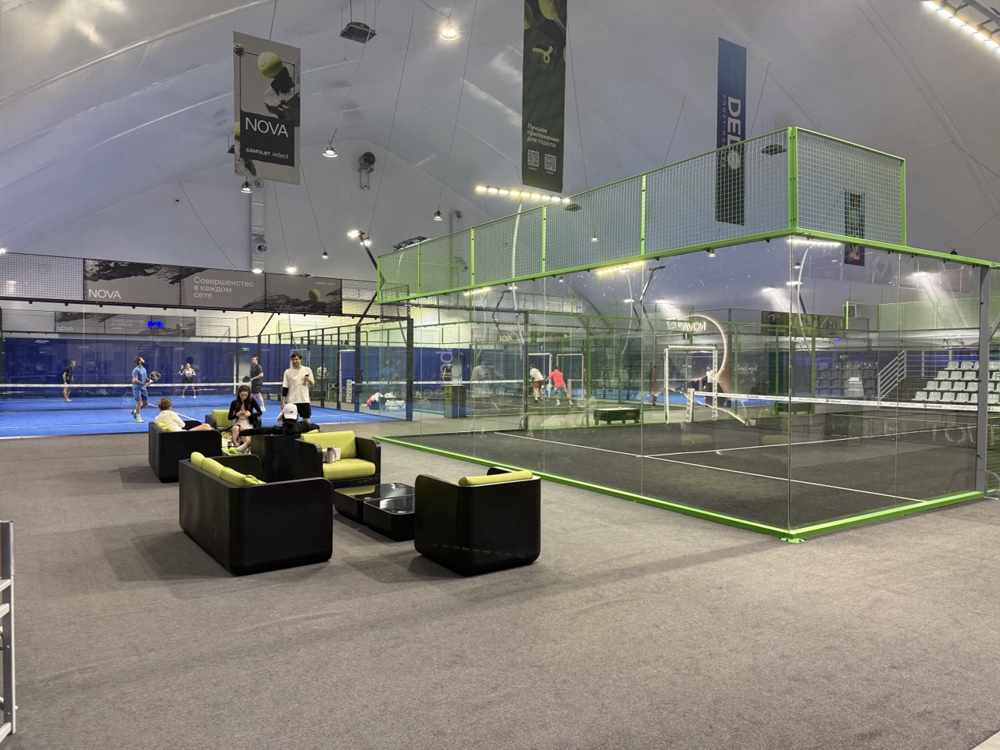

Что такое падел-теннис?
Падел-теннис (padel tennis) — это динамичный вид спорта, который объединяет элементы большого тенниса и сквоша. Игра проходит на закрытом корте, окружённом стенами и сеткой, которые являются частью игрового поля. В отличие от большого тенниса, в падел-теннисе стены используются как активный элемент игры — мяч может от них отскакивать, что создаёт непредсказуемые и захватывающие розыгрыши.
Игра ведётся в парах (2 на 2), что делает её очень социальной и тактической. Падел-теннис считается одним из самых быстрорастущих видов спорта в мире, особенно популярен в Испании, Аргентине и других странах Латинской Америки.
История падел-тенниса
Падел-теннис был изобретён в 1969 году мексиканцем Энрике Коркуэра в Акапулько. Изначально он создал корт на своём участке, используя стены дома и заборы. Идея понравилась его друзьям, и вскоре игра начала распространяться.
В 1974 году испанский принц Альфонсо де Хоэнлоэ познакомился с игрой во время отдыха в Мексике и привёз её в Испанию. С тех пор падел-теннис стал невероятно популярен в Испании, где сегодня насчитываются миллионы игроков и тысячи кортов. В 1991 году была основана Международная федерация падел-тенниса (FIP), которая сегодня объединяет более 50 стран.
Основные правила игры
Подача
Подача выполняется снизу, мяч должен удариться сначала на стороне подающего, затем перелететь через сетку и попасть в квадрат подачи соперника. Мяч может отскочить от стены после первого отскока.
Отскок от стен
Мяч может отскакивать от стен корта после первого отскока от земли. Это ключевая особенность падел-тенниса, которая отличает его от большого тенниса и делает игру более динамичной.
Очко
Очко засчитывается, если мяч дважды отскакивает на стороне соперника, выходит за пределы корта через открытые проёмы, или соперник нарушает правила (например, касается сетки ракеткой).
Сет и матч
Сет играется до 6 геймов с преимуществом в 2 гейма. При счёте 6:6 играется тай-брейк до 7 очков. Матч обычно состоит из 3 сетов.
Корт и оборудование
Корт
Корт для падел-тенниса имеет размеры 20 м × 10 м (в два раза меньше теннисного корта). Он окружён стенами высотой 3-4 метра, которые могут быть из стекла, бетона или металлической сетки. Сетка делит корт пополам и имеет высоту 88 см в центре и 92 см по краям. В задних стенах есть проёмы для выхода мяча.
Ракетка
Ракетка для падел-тенниса кардинально отличается от теннисной. Она сплошная, без струн, с многочисленными отверстиями для уменьшения сопротивления воздуха. Ракетка изготавливается из композитных материалов (углеродное волокно, стекловолокно) и имеет ремешок для фиксации на запястье. Длина ракетки не должна превышать 45,5 см.
Мяч
Мяч для падел-тенниса похож на теннисный, но имеет немного меньшее давление (от 4,6 до 5,2 кг/см²) и диаметр от 6,35 до 6,77 см. Это делает его немного медленнее теннисного, что компенсируется использованием стен в игре.
Техника игры
Основные удары
- Подача снизу — обязательная подача выполняется снизу, мяч должен попасть в квадрат подачи
- Удар с отскока от стены — ключевой элемент, позволяющий использовать стены для атаки и защиты
- Смэш — мощный атакующий удар сверху, часто используемый у сетки
- Лоб — высокий удар, заставляющий соперников отойти к задней линии
- Бандаха — удар после отскока мяча от задней стены
- Вибора — удар с сильным вращением, изменяющий траекторию мяча
Тактика
Падел-теннис требует отличной координации между партнёрами. Игроки должны постоянно общаться и перемещаться синхронно. Позиция у сетки (у "сетки") является ключевой для атаки, в то время как задняя линия используется для защиты. Использование стен для создания неожиданных углов — одна из главных тактических особенностей игры.
Интересный факт
Падел-теннис — один из самых быстрорастущих видов спорта в мире! В Испании он уже обогнал большой теннис по популярности, а количество кортов растёт экспоненциально. Игра считается более доступной, чем большой теннис, так как корт меньше и игра в парах делает её более социальной.
Польза для здоровья
Падел-теннис — отличная физическая нагрузка, которая развивает:
- Кардиоваскулярную выносливость — игра требует постоянного движения
- Координацию и реакцию — необходимо быстро реагировать на отскоки от стен
- Ловкость и гибкость — множество резких движений и изменений направления
- Силу ног и корпуса — постоянные приседания и повороты
- Стратегическое мышление — необходимо предугадывать траекторию мяча
- Социальные навыки — игра в парах развивает командную работу
При этом падел-теннис менее травмоопасен, чем большой теннис, благодаря меньшему размеру корта и более мягкому мячу. Игра подходит для людей всех возрастов и уровней подготовки.
Почему падел-теннис набирает популярность?
Падел-теннис становится всё популярнее по нескольким причинам:
- Доступность — легче научиться, чем большому теннису, особенно для новичков
- Социальность — игра в парах делает её отличным способом провести время с друзьями
- Динамичность — использование стен создаёт непредсказуемые и захватывающие моменты
- Компактность — корт занимает меньше места, чем теннисный
- Универсальность — подходит для игроков разного возраста и уровня подготовки